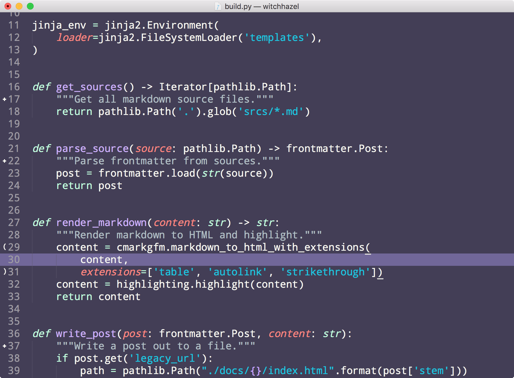

Witch Hazel
A dark & feminine color scheme for Sublime, VS Code, JetBrains, and Pygments.

Made with ♥ by Thea Flowers.
Sublime Text installation
With Package Control:
- Open the command palette using
ctrl+shift+p(Windows & Linux) orcmd+shift+p(macOS). - Choose
Package Control: Install Packagefrom the command palette. - Search for
Witch Hazeland install it. - Pick
Witch HazelusingPreferences -> Color Scheme.
Manual installation:
- Download the theme.
- Open the packages directory using
Preferences -> Browse Packages.... - Copy the theme file into your packages directory.
- Pick
Witch HazelusingPreferences -> Color Scheme.
VS Code installation
- Go to
View -> Extensions. - Search for
Witch Hazeland clickInstall. - Pick
Witch HazelusingPreferences -> Color Theme.
JetBrains (PyCharm, IntelliJ, etc.) installation
- Download the theme.
- Go to
Preferences -> Editor -> Color Scheme. - Click the
gearicon and chooseImport Scheme. - Navigate to the downloaded theme file.
Pygments & Sphinx installation
- Install using
pip install witchhazel. - Open your docs
conf.py. - Set
pygments_style = "witchhazel.WitchHazelStyle".
Atom installation
- Download the theme.
- Locate the Atom packages directory (listed at the top of
Settings -> Install). - Unzip the theme folder into the Atom packages directory.
- Pick
Witch HazelusingSettings -> Themes -> Syntax Theme.
This theme was created using this editor and based on the amazing FairyFloss theme.